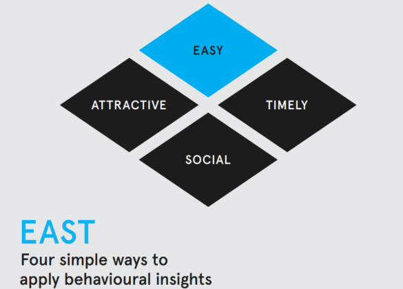

Understanding Behaviour Change in Government Comms
Behaviour change communications aim to influence the actions of individuals or groups for improved public outcomes — whether that's health, safety, environmental impact or civic behaviour.
Key Frameworks
- COM-B Model: Behaviour is seen as the result of Capability, Opportunity and Motivation. Addressing these three areas helps design more effective interventions.
- EAST Framework: Developed by the UK Behavioural Insights Team, EAST encourages change by making behaviours Easy, Attractive, Social and Timely.
COM-B Model Diagram

Source: ResearchGate
EAST Framework Diagram
Source: Behavioural Insights Team
Applying Behavioural Thinking
Government communicators should consider behavioural drivers in the insight and planning stages of campaigns. Behavioural models can support message development, channel choices and evaluation metrics.
Resources and Support
- GCS Behaviour Change Guidance
- Behavioural Insights Team Publications
- Tasmanian Government Communications Hub (local context, planning and approvals)
Where This Fits
This page links to the Strategic Comms, Insight and Campaigns sections of Comms Assist, where behavioural thinking can shape strategy, execution and evaluation.